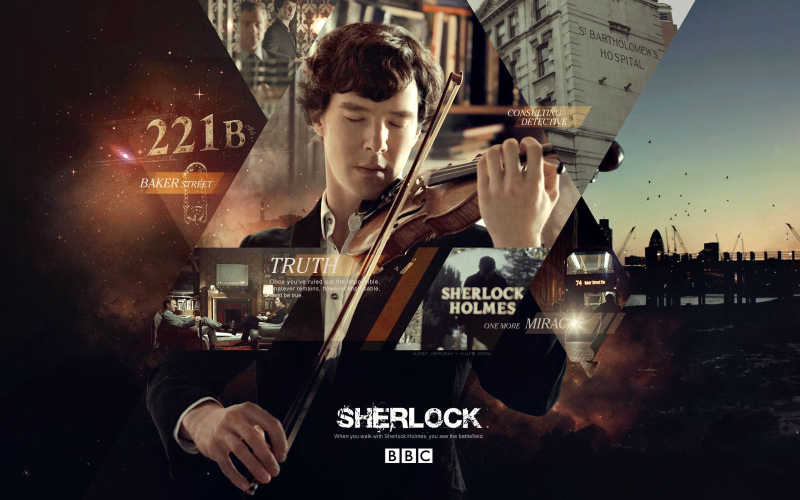

Sherlock

Ladies and gentlemen, family and friends, and...um, others:
John Watson. My friend John Watson. John... When John first broached the subject of being Best Man, I was confused.
I confess at first I didn’t realize he was asking me, when finally I understood I expressed to him that I was both flattered and surprised. I nonetheless promised that I would do my very best to accomplish a task which was, for me, as demanding and difficult as any I had ever contemplated. Additionally, I thanked him for the trust he placed in me and indicated that I was, in some ways, very close to being moved by it.
I’m afraid John, I can’t congratulate you. All emotions and in particular love, stand opposed to the pure, cold reason I hold above all things. A wedding is, in my considered opinion, nothing short of a celebration of all that is false and specious and irrational and sentimental in this ailing and morally compromised world. Today we honor the deathwatch beetle that is the doom of our society and in time one feels certain our entire species. But anyway, let’s talk about John.
If I burden myself with a little helpmate during my adventures, this is not out of sentiment or caprice, it is that he has many fine qualities of his own, that he has overlooked in his obsession with me. Indeed, any reputation I have for mental acuity and sharpness comes in turn, From the extraordinary contrast John so selflessly provides. It is a fact, I believe, that brides tend to favor exceptionally plain bridesmaids for their big day. There is a certain analogy there, I feel, and contrast is, after all, God’s own plan to enhance the beauty of his creation. Or it would be if God were not a ludicrous fantasy designed to provide a career opportunity for the family idiot.
The point I’m trying to make is that I am the most unpleasant, rude, ignorant, and all round obnoxious asshole that anyone could possibly have misfortune to meet. I am dismissive of the virtuous, unaware of the beautiful and uncomprehending in the face of the happy. So if I didn’t understand I was being asked to be Best Man. It is because I never expected to be anybody’s best friend. And certainly not the best friend of the bravest and kindest and wisest human being I have ever had the good fortune of knowing.
John, I am ridiculous man. Redeemed only by the warmth and constancy of your friendship. But as I am apparently your best friend, I cannot congratulate you on your choice of companion. Actually, now I can.
Mary, when I say you deserve this man, it is the highest compliment of which I am capable.
John, you have endured war and injury and tragic loss, so sorry again about that last one, so know this-today you sit between the woman you have made your wife and the man you have saved. In short, the two people who love you most in all this world, and I know I speak for Mary as well when I say, we will never let you down. And we have a lifetime ahead to prove that.
Now onto some funny stories about John. So for funny stories on has to look no further than John’s blog. The record of our time together. Of course, he does tend to romanticize things a lot, but then you know he’s a romantic. We’ve tackled some strange cases, The Hollow Client, The Poison Giant We’ve had some frustrating cases. Touching cases. And of course I have to mention the elephant in the room. But we want something very particular for this special day, don’t we? The Bloody Guardsman.....
I probably should have told you about the elephant in the room. However, it dose help to further illustrate how invaluable John is to me.
I can read a crime scene the way he can understand a human being. I used to think that’s what made me special, quite frankly I still do. But a word to the wise, should any of you require the services of either of us, I will solve your murder, but it takes John Watson to save your life. Trust me on that I should know, he’s saved mine so many times and in so many ways.
This blog...is the story of two men and their, frankly, ridiculous adventures. Of murder, mystery and mayhem. But from now on, there’s a new story. A bigger adventure.
Ladies and gentlemen,
Pray charge your glasses and be upstanding. Today begin the adventures of Mary Elizabeth Watson and John Hamish Watson.
I have never made a vow in my life, and after tonight I never will again. So, here in front of you all, my first and last vow. Mary and John, whatever it takes, whatever happens, from now on, I swear I will always be there, always, for all three of you.
3